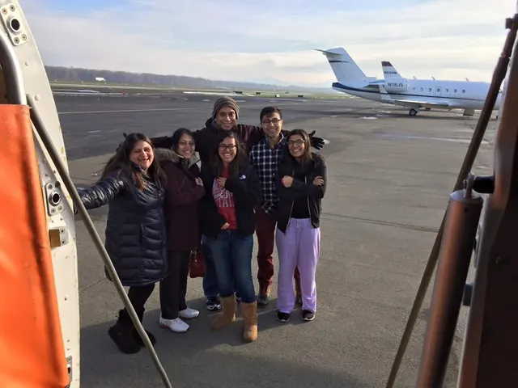
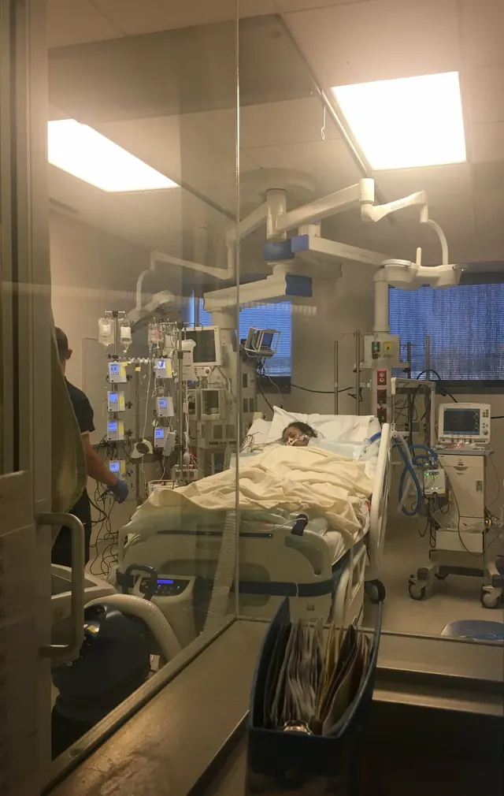
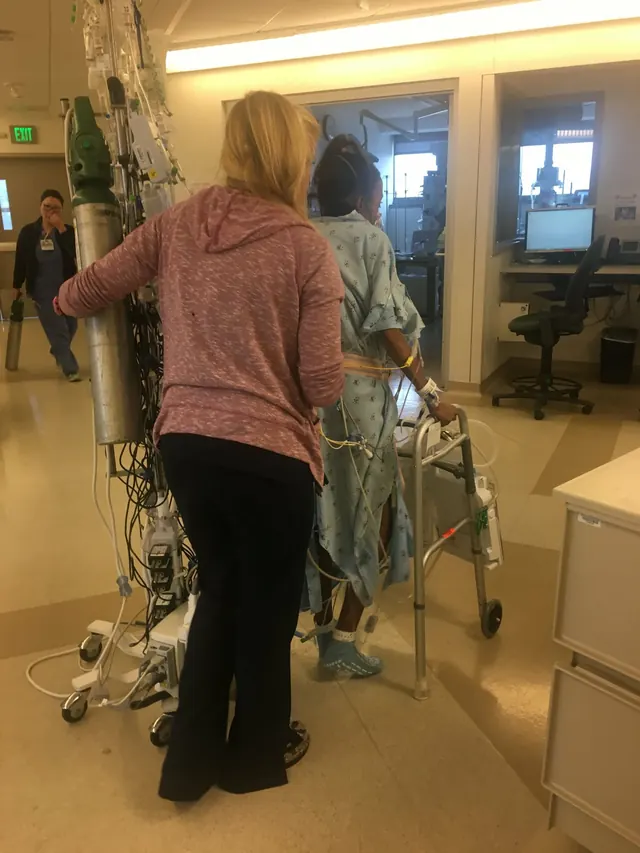
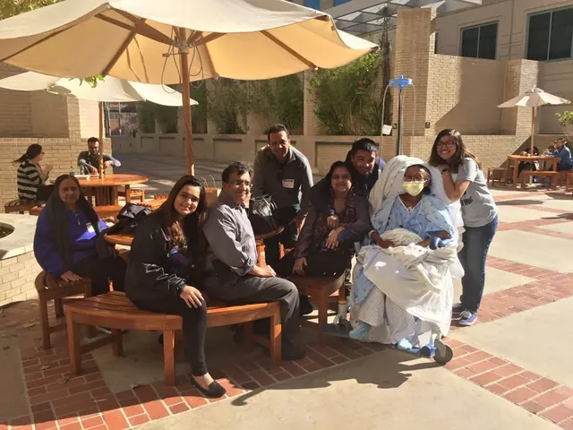
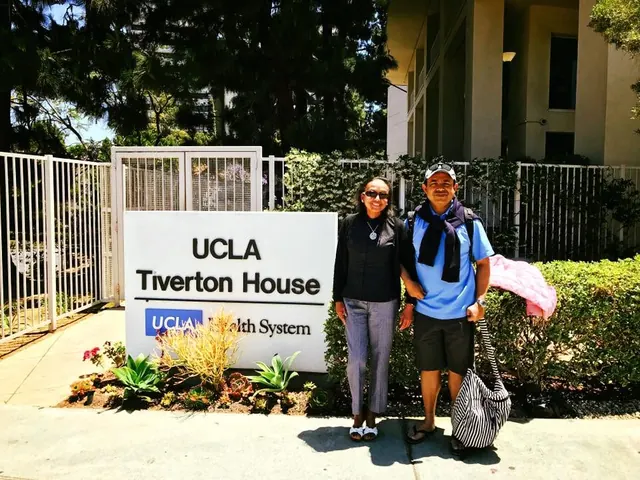
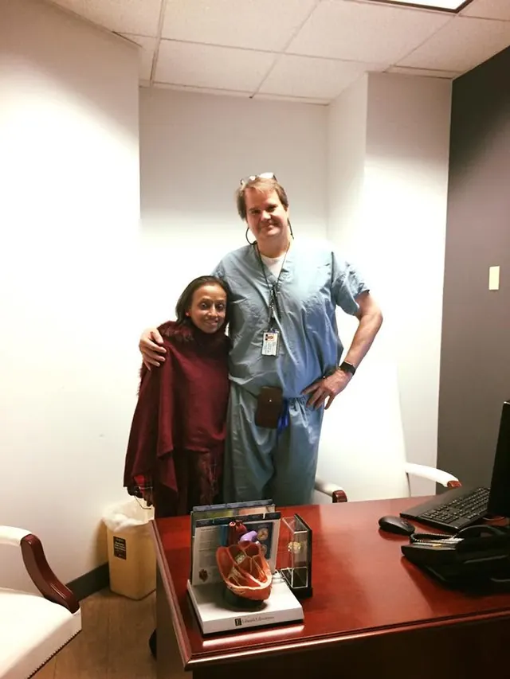

Her story
Short of breath
In 2012, my mom started running out of breath far too easily. We didn’t think much of it. Then, at an appointment for something else entirely, her doctor watched her oxygen drop as she simply walked across the room.
Months of tests and biopsies followed, and with them three diagnoses: Sjögren’s syndrome, pulmonary hypertension and pulmonary fibrosis. Medication could ease the symptoms. Only new lungs could change the ending.
Waiting to be let in
Year by year, her breathing worsened. With no lung transplant program in Oregon, she went through months of tests to join the list at the University of Washington, then stepped off it when my dad’s work kept moving our family from state to state.
A year later, and sicker, she went back. This time she was turned away: too high-risk, they said, and no one would take her. Her pulmonology team refused to accept that answer, and pointed her to UCLA. Given how critical she was, she went straight to the top of the list.
They told her no one would take her.
UCLA did.
The call
About a month later, the phone rang at four in the morning on a cold December night. Our bags were already packed. My mom flew south by air ambulance, I caught the first flight out, and my dad came from Sacramento, where he was working, to meet us there.

UCLA list
surgery
first steps
The longest night
The surgery ran through the night, and none of us slept. Our phones never stopped: calls and texts from everyone who knows her, sending love, strength, prayers and positivity, hoping for updates, offering relief and kindness in every way they could.
We had no idea whether she would make it out. Spoiler: she did.

The team at UCLA is incredible. Within 24 hours, they had her out of bed and taking her first walk.

Learning to breathe again
After three weeks in the ICU, she moved to Tiverton House, UCLA’s hotel for patients and their families. It was meant to be home for three months, but she recovered so well that we got to go home early, after just two. Family flew in to see her get stronger, one day at a time.


